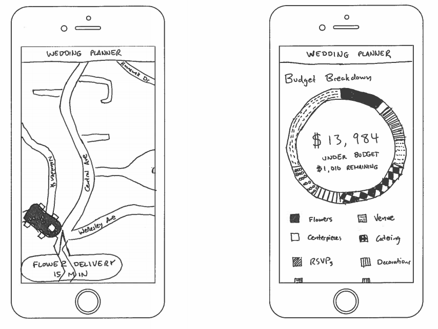

Project Brief
What is the problem in brief?
The process of planning a wedding is a highly stressful dance with emotionally high stakes that involves juggling many different responsibilities for months at a time. Hiring a wedding planner is an option for some people, but many choose to plan their own weddings for monetary reasons and to maintain creative and administrative ownership over the project. An interface built intentionally to remove the stress from wedding planning can make it a more enjoyable and affordable project for many.
How will your project change the status quo? For whom?
When people decide to get married, they have the option to hire a wedding planner or plan their wedding themselves. A wedding planner handles the miniscule details for the bride and groom like ordering wedding items, coordinating the bridesmaids, planning the seating arrangements, and budgeting. However, wedding planners cost between $5000 - 10,000. Some people resort to planning their own wedding because a wedding planner might be too expensive or they enjoy making all of the creative decisions. People planning their own wedding keep track of a lot of details and spend countless hours following through with different service providers. Different providers need to be hired different amounts of time ahead of the wedding, and their goods need to be delivered at different times before the wedding. Especially on the day of the wedding where most of the wedding items are delivered, the bride or someone close to the bride spend their time worrying that things get delivered on time and fit the aesthetic, instead of feeling calm and beautiful. Currently, most people that plan their own weddings have basic todo lists and/or rough calculations of their budget. There currently exist mobile apps that advertise they help people plan their own weddings, but most of them are glorified to-do lists and look hideous. Another to-do list app might not help people who plan their own weddings, but through user research, we might be able to develop an interface that could improve the wedding planning experience.
What is (at least) one naïve design idea (rough sketch)?

How does this idea address what you see as the core problem?
The two screens above attempt to solve two assumptions that we have made about wedding planning: that different providers of wedding goods need to be delivered at different times before the wedding and that people planning their own wedding do so either for monetary reasons or for creative control of the event. In addressing the first assumption, the interface is very similar to Uber in that it has real-time tracking of deliveries for the wedding and could greatly reduce the amount of time the wedding planner must be contacting vendors on the day of or before the event. The screen on the right is a comprehensive financial breakdown of the wedding which highlights key features like whether or not you are under budget and how much of your budget remains.
In order for this to be a successful project, we need to interact extensively with our users to answer the following questions:
In order for this to be a successful project, we need to interact extensively with our users to answer the following questions
- How long do people spend per day planning their wedding?
- How much money do people spend?
- How many people help them plan their wedding?
- Where do people get inspiration and ideas?
- How do people keep organized?
- How long does it take (in days) to plan a wedding?
- How do people make important, big decisions (Where to get flowers, where to have the wedding, etc.)
- What tools are people already using to plan their own weddings?
- What was the first thing people felt like they needed to plan?
- What was something people didn’t realize they needed to plan for?
- Did they outsource any part of the planning to other people?
- How big of a wedding did they try to plan?
- What was/has been the hardest part of planning so far?
- What did people rely on the most while planning?
- What were people’s favorite parts of planning the wedding?
- What was the most rewarding part of planning the wedding?
- What do people wish they knew before they started planning?
- What would people change about their weddings, if anything?
- Why don’t people use wedding planners?
- Why do people use wedding planners?
- Why do people enjoy planning weddings?
How will you collect it?
As a team, we are planning on doing research into the current apps and tools available for wedding planners. Additionally, we will be speaking to people who have either recently gotten married and planned their own wedding or are currently in the process of planning their own wedding through interviews either in person, over Skype, or over the phone. Finally, we will be looking on online forums (such as reddit) to begin collecting this information from a wide audience who is already discussing the pain points of wedding planning and potentially asking questions ourselves to obtain more perspectives. We are also considering trying to plan a mock wedding to see how hard it is and what our own hypothetical pain points would be. We feel like this could be helpful on some of the more logistical questions we have.
How will you meet your target users, or who can serve as effective proxies for them?
One of our team members knows two people who are currently planning their own wedding, we were hoping to use them as initial contacts. Additionally, there are many Pinterest boards and subreddits focused on people sharing wedding information. We were going to reach out to some of these people, with the hopes that some of them might be planning their own wedding and would be willing to talk to us. We believe that effective proxies for people planning their own weddings might be people who have previously planned their own weddings, and are already married.
How will your team work together to accomplish these goals (as well as your individual learning goals)?
We intend to check in early and often to make realistic appraisals of how our progress is coming. We learned in UOCD that being in denial about progress and team satisfaction is a common indicator for project failure modes early on. In planning and assigning tasks, we will be conscious of learning goals, and hope to prioritize them over speed/quality of completion (e.g. Zoher knows how to use Adobe products well, but we’d rather have Patrick or Annabel take a longer time to complete a relevant task with Zoher’s help to fulfill their learning goals). Overall, we feel that we’ve created a solid precedent for good team communication that will set us up for a successful semester.
Effort Chart
| Annabel | Christina | Zoher | Casey | Patrick | Total | |
|---|---|---|---|---|---|---|
| Project Brief | 20 | 20 | 20 | 20 | 20 | 100 |